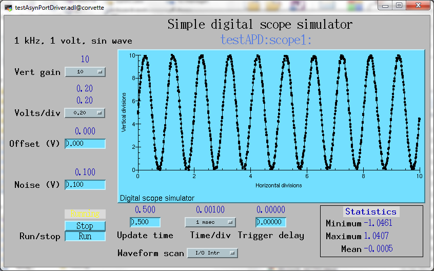

asynPortDriver is a base C++ class that is designed to greatly simplify the task of writing an asyn port driver. It handles all of the details of registering the port driver, registering the supported interfaces, and registering the required interrupt sources.
Drivers typically need to support a number of parameters that control their operation and provide status information. Most of these can be treated as 32-bit integers, 64-bit floats, or strings. When the new value of a parameter is sent to a driver, (e.g. new D/A output value) from an asyn client (e.g. an EPICS record), then the driver will need to take some action. It may change some other parameters in response to this new value. The sequence of operations in the driver can be summarized as
asynPortDriver provides methods to simplify the above sequence, which must be implemented for each of the often many parameters that the driver supports. Each parameter is assigned a number, which is the value in the pasynUser->reason field that asyn clients pass to the driver when reading or writing that parameter. asynPortDriver maintains a table of parameter values, associating each parameter number with a data type (integer, UInt32Digital, double, or string), caching the current value, and maintaining a flag indicating if a value has changed. Drivers use asynPortDriver methods to read the current value from the table, and to set new values in the table. There is a method to call all registered callbacks for values that have changed since callbacks were last done.
The detailed documentation for asynPortDriver is in these files (generated by doxygen):
The example driver in asyn (testAsynPortDriver) is a simple example of how to use this class
The synApps measComp module contains a detailed example of writing an asynPortDriver driver. The driver is for the Measurement Computing USB-1608GX-2AO USB device. The example starts with a very simple driver that only uses a few of the features of the device, and is fewer than 150 lines of code. There are 5 versions of the driver that each add additional features. There is a document describing the code for each driver in detail, which was the basis of a talk at an EPICS short course on asyn. The following are links to this example:
More complex examples can be found in the drivers and plugins provided with the areaDetector module.
An example driver using the asynPortDriver class is provided in the testAsynPortDriverApp application in asyn. This example is a simple digital oscilloscope emulator. In this example all of output control and input data is done in a calculated simulation. But it is easy to see how to use the driver as a basis for real device control. The code doing the simulation would simply be changed to talk to an actual device. This could be done using the asyn serial or IP drivers via the asynOctetSyncIO interface (because at this driver level blocking is permitted), or via VME register access, or any other I/O mechanism.
This is the medm screen for controlling this example application. It is started in the testAsynPortDriverApp/adl directory with the command:
medm -x -macro "P=testAPD:, R=scope1:" testAsynPortDriver.adl &

The simulated scope input is a noisy 1kHz sin wave with an amplitude of +-1V. The amplitude of the noise is an adjustable parameter. The scope parameters that can be adjusted are the vertical volts/division, vertical volt offset, horizontal time/division, trigger delay (relative to time=0 for the sin wave). The minimum, maximum and mean values of the waveform are calculated. The run/stop control turns the simulation of the waveform on and off. The update time in seconds controls the rate at which the waveform and statistics are calculated. By default all of the EPICS input records are I/O Intr scanned. There is a control on the medm screen to change the scan rate of the waveform record itself. By default it is also I/O Intr scanned, so the plot updates on every simulation. One can change this to, for example, 1 second, and then the simulation can be running faster (for example 50 Hz, Update time=.02) so the statistics will update quickly but the waveform at only 1Hz to save CPU time and network bandwidth.
This driver supports about 20 EPICS records, including ao, ai, bo, bi, and waveform. It does callbacks to device support when any of the input records changes, so the records can use I/O Intr scanning rather than polling. It uses only the standard asyn EPICS record device support provided as part of asyn. Yet the driver is only about 340 lines of well-commented C++ code, because so much of the infrastructure is handled by the asynPortDriver base class.
Here are the important lines from the startup script to start this IOC:
testAsynPortDriverConfigure("testAPD", 1000)
dbLoadRecords("../../db/testAsynPortDriver.db","P=testAPD:,R=scope1:,PORT=testAPD,ADDR=0,TIMEOUT=1,NPOINTS=1000")
The first line starts the asyn port driver with a 1000 point waveform. The second line loads the database. The PORT parameter is the name of the asyn port created in the first line. The ADDR parameter is 0 because this driver is not ASYN_MULTIDEVICE, it only supports a single address. The TIMEOUT parameter is not really significant because this is a synchronous asyn port driver, i.e. ASYN_CANBLOCK=0. NPOINTS is the value for NELM in the waveform record in the database. It would normally match the value provided in the configure command above.
This is an example of 2 of the record definitions in the database file, testAsynPortDriver.db.
###################################################################
# These records are the time per division #
###################################################################
record(ao, "$(P)$(R)TimePerDiv")
{
field(PINI, "1")
field(DTYP, "asynFloat64")
field(OUT, "@asyn($(PORT),$(ADDR),$(TIMEOUT))SCOPE_TIME_PER_DIV")
field(PREC, "5")
}
record(ai, "$(P)$(R)TimePerDiv_RBV")
{
field(PINI, "1")
field(DTYP, "asynFloat64")
field(INP, "@asyn($(PORT),$(ADDR),$(TIMEOUT))SCOPE_TIME_PER_DIV")
field(PREC, "5")
field(SCAN, "I/O Intr")
}
Note that there is both an output record and an input record for this parameter, the time per horizontal division. This is done so that if the driver is forced to modify a parameter (for example because the device cannot support the output value it received) there is feedback to the user on the actual value being used. In this case the ai record will always be the same as the ao record. But in the case of the update time parameter the driver enforces a minimum time of 0.02 seconds, so that if a value less than this is requested the ao and ai records will not agree. In that particular case DRVL could be used to enforce that limit at the ao record level, but this is not always the case, because device limits can vary with the value of other parameters.
The DTYP field of these records is asynFloat64, which uses the standard asyn device support for ao and ai records, provided in asyn/devEpics/devAsynFloat64.c.
The OUT and INP fields use the PORT, ADDR and TIMEOUT values described above. The final parameter, SCOPE_TIME_PER_DIV in these fields is used by the driver to identify which driver parameter these records are connected to. This is the asyn drvInfo parameter, and is discussed below.
Finally, note that the ai record has SCAN=I/O Intr. This means that this record does not have to be periodically scanned (which is inefficient), but rather it will be processed whenever its value is changed by the driver. For the ai statistics records (min, max, mean) in this example,,. record callbacks occur every time the simulation runs if the noise is non-zero.
This is the definition of the testAsynPortDriver class:
class testAsynPortDriver : public asynPortDriver {
public:
testAsynPortDriver(const char *portName, int maxArraySize);
/* These are the methods that we override from asynPortDriver */
virtual asynStatus writeInt32(asynUser *pasynUser, epicsInt32 value);
virtual asynStatus writeFloat64(asynUser *pasynUser, epicsFloat64 value);
virtual asynStatus readFloat64Array(asynUser *pasynUser, epicsFloat64 *value,
size_t nElements, size_t *nIn);
virtual asynStatus readEnum(asynUser *pasynUser, char *strings[], int values[], int severities[],
size_t nElements, size_t *nIn);
/* These are the methods that are new to this class */
void simTask(void);
protected:
/** Values used for pasynUser->reason, and indexes into the parameter library. */
int P_Run;
int P_MaxPoints;
int P_TimePerDiv;
int P_TimePerDivSelect;
int P_VertGain;
int P_VertGainSelect;
int P_VoltsPerDiv;
int P_VoltsPerDivSelect;
int P_VoltOffset;
int P_TriggerDelay;
int P_NoiseAmplitude;
int P_UpdateTime;
int P_Waveform;
int P_TimeBase;
int P_MinValue;
int P_MaxValue;
int P_MeanValue;
private:
/* Our data */
epicsEventId eventId_;
epicsFloat64 *pData_;
epicsFloat64 *pTimeBase_;
// Actual volts per division are these values divided by vertical gain
char *voltsPerDivStrings_[NUM_VERT_SELECTIONS];
int voltsPerDivValues_[NUM_VERT_SELECTIONS];
int voltsPerDivSeverities_[NUM_VERT_SELECTIONS];
void setVertGain();
void setVoltsPerDiv();
void setTimePerDiv();
};
testAsynPortDriver is derived from asynPortDriver. It overrides the methods writeInt32, writeFloat64, readFloat64Array, and drvUserCreate. It adds a new method, simTask, which runs a separate thread to compute the waveform at the specified update time.
This is the how the parameters are defined in the driver, testAsynPortDriver.cpp
/* These are the drvInfo strings that are used to identify the parameters. * They are used by asyn clients, including standard asyn device support */ #define P_RunString "SCOPE_RUN" /* asynInt32, r/w */ #define P_MaxPointsString "SCOPE_MAX_POINTS" /* asynInt32, r/o */ #define P_TimePerDivisionString "SCOPE_TIME_PER_DIV" /* asynFloat64, r/w */ #define P_VoltsPerDivisionString "SCOPE_VOLTS_PER_DIV" /* asynFloat64, r/w */ #define P_VoltOffsetString "SCOPE_VOLT_OFFSET" /* asynFloat64, r/w */ #define P_TriggerDelayString "SCOPE_TRIGGER_DELAY" /* asynFloat64, r/w */ #define P_NoiseAmplitudeString "SCOPE_NOISE_AMPLITUDE" /* asynFloat64, r/w */ #define P_UpdateTimeString "SCOPE_UPDATE_TIME" /* asynFloat64, r/w */ #define P_WaveformString "SCOPE_WAVEFORM" /* asynFloat64Array, r/o */ #define P_TimeBaseString "SCOPE_TIME_BASE" /* asynFloat64Array, r/o */ #define P_MinValueString "SCOPE_MIN_VALUE" /* asynFloat64, r/o */ #define P_MaxValueString "SCOPE_MAX_VALUE" /* asynFloat64, r/o */ #define P_MeanValueString "SCOPE_MEAN_VALUE" /* asynFloat64, r/o */
Note that each parameter has an integer value that identifies it. It is also associated with a string that is used in the drvInfo field of the record INP or OUT fields to associate a record with a parameter.
This is the beginning of the constructor for the testAsynPortDriver C++ class.
testAsynPortDriver::testAsynPortDriver(const char *portName, int maxPoints)
: asynPortDriver(portName,
1, /* maxAddr */
asynInt32Mask | asynFloat64Mask | asynFloat64ArrayMask | asynEnumMask | asynDrvUserMask, /* Interface mask */
asynInt32Mask | asynFloat64Mask | asynFloat64ArrayMask | asynEnumMask, /* Interrupt mask */
0, /* asynFlags. This driver does not block and it is not multi-device, so flag is 0 */
1, /* Autoconnect */
0, /* Default priority */
0) /* Default stack size*/
...
It invokes the constructor for the asynPortDriver base class. It passes:
The constructor also allocates spaces for the waveform arrays (X and Y axes), and creates the simTask thread.
This is the implementation of the writeFloat64 function:
asynStatus testAsynPortDriver::writeFloat64(asynUser *pasynUser, epicsFloat64 value)
{
int function = pasynUser->reason;
asynStatus status = asynSuccess;
epicsInt32 run;
const char *paramName;
const char* functionName = "writeFloat64";
/* Set the parameter in the parameter library. */
status = (asynStatus) setDoubleParam(function, value);
/* Fetch the parameter string name for possible use in debugging */
getParamName(function, ¶mName);
if (function == P_UpdateTime) {
/* Make sure the update time is valid. If not change it and put back in parameter library */
if (value < MIN_UPDATE_TIME) {
asynPrint(pasynUser, ASYN_TRACE_WARNING,
"%s:%s: warning, update time too small, changed from %f to %f\n",
driverName, functionName, value, MIN_UPDATE_TIME);
value = MIN_UPDATE_TIME;
setDoubleParam(P_UpdateTime, value);
}
/* If the update time has changed and we are running then wake up the simulation task */
getIntegerParam(P_Run, &run);
if (run) epicsEventSignal(eventId_);
} else {
/* All other parameters just get set in parameter list, no need to
* act on them here */
}
/* Do callbacks so higher layers see any changes */
status = (asynStatus) callParamCallbacks();
if (status)
epicsSnprintf(pasynUser->errorMessage, pasynUser->errorMessageSize,
"%s:%s: status=%d, function=%d, name=%s, value=%f",
driverName, functionName, status, function, paramName, value);
else
asynPrint(pasynUser, ASYN_TRACEIO_DRIVER,
"%s:%s: function=%d, name=%s, value=%f\n",
driverName, functionName, function, paramName, value);
return status;
}
This is what is being performed in this function:
function.
This is one of the parameter indices (e.g. P_TimePerDivision). It was placed in
the pasynUser->reason field by this driver's drvUserCreate method that was called
at iocInit, and was passed the drvUser field from the record link, e.g. "SCOPE_TIME_PER_DIV".setDoubleParam.callParamCallbacks() is called, which results in callbacks to all
registered clients for any parameters that have changed as a result of this function
call. In this case the only parameter that will have changed is whatever parameter
was passed in pasynUser->reason, but in general other parameters could have changed
as a side-effect of changing this parameter.
The writeInt32 function is very similar.
Finally here is the simTask function, which actually does the simulation.
It runs in a separate thread created in the constructor:
void testAsynPortDriver::simTask(void)
{
/* This thread computes the waveform and does callbacks with it */
double timePerDiv, voltsPerDiv, voltOffset, triggerDelay, noiseAmplitude;
double updateTime, minValue, maxValue, meanValue;
double time, timeStep;
double noise, yScale;
epicsInt32 run, i, maxPoints;
double pi=4.0*atan(1.0);
lock();
/* Loop forever */
while (1) {
getDoubleParam(P_UpdateTime, &updateTime);
getIntegerParam(P_Run, &run);
// Release the lock while we wait for a command to start or wait for updateTime
unlock();
if (run) epicsEventWaitWithTimeout(eventId_, updateTime);
else (void) epicsEventWait(eventId_);
// Take the lock again
lock();
/* run could have changed while we were waiting */
getIntegerParam(P_Run, &run);
if (!run) continue;
getIntegerParam(P_MaxPoints, &maxPoints);
getDoubleParam (P_TimePerDiv, &timePerDiv);
getDoubleParam (P_VoltsPerDiv, &voltsPerDiv);
getDoubleParam (P_VoltOffset, &voltOffset);
getDoubleParam (P_TriggerDelay, &triggerDelay);
getDoubleParam (P_NoiseAmplitude, &noiseAmplitude);
time = triggerDelay;
timeStep = timePerDiv * NUM_DIVISIONS / maxPoints;
minValue = 1e6;
maxValue = -1e6;
meanValue = 0.;
yScale = 1.0 / voltsPerDiv;
for (i=0; i<maxPoints; i++) {
noise = noiseAmplitude * (rand()/(double)RAND_MAX - 0.5);
pData_[i] = AMPLITUDE * (sin(time*FREQUENCY*2*pi)) + noise;
/* Compute statistics before doing the yOffset and yScale */
if (pData_[i] < minValue) minValue = pData_[i];
if (pData_[i] > maxValue) maxValue = pData_[i];
meanValue += pData_[i];
pData_[i] = NUM_DIVISIONS/2 + yScale * (voltOffset + pData_[i]);
time += timeStep;
}
updateTimeStamp();
meanValue = meanValue/maxPoints;
setDoubleParam(P_MinValue, minValue);
setDoubleParam(P_MaxValue, maxValue);
setDoubleParam(P_MeanValue, meanValue);
callParamCallbacks();
doCallbacksFloat64Array(pData_, maxPoints, P_Waveform, 0);
}
}
Here are the important aspects of this function:
P_Run determines whether the simulation is running or
stopped. If stopped it simply waits for a signal (from the writeInt32()
function) to start running. If running it waits for the update time, or until it
receives a signal, which will occur if the update time is changed in the writeFloat64()
function.P_TimePerDivision,
etc.) from the parameter list.for loop, using
the current values of the simulation parameters. It also updates the statistics
parameters (min, max, mean) inside this loop.setDoubleParam().callParamCallbacks().doCallbacksFloat64Array().
Real drivers may or may not need such a separate thread. Drivers that need to periodically
poll status information will probably use one. Most drivers will probably implement
one or more of the writeInt32(), writeFloat64(), or
writeOctet() functions, in addition to drvUserCreate().